롬 1:1–2 하나님의 복음
01 / 12
롬 1:1–2 하나님의 복음
01 — 12
OPENING
롬 1:1–2 하나님의 복음
예수님의 복음과 바울의 복음은 같은가?
이 강해가 끝까지 답할 중심 질문은 두 복음의 동일성이다.
하나님의 복음 • 롬 1:1–2
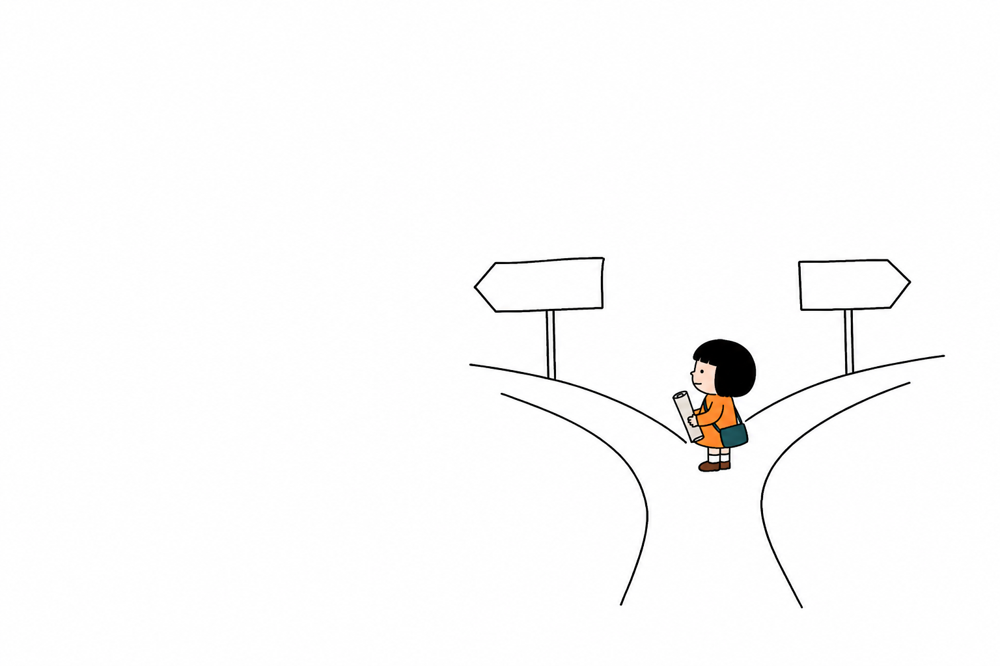
원문 • 원문 행 5
01
롬 1:1–2 하나님의 복음
02 — 12
CONTEXT
복음의 시간을 다시 놓다
원문은 예수와 로마서 사이의 26–27년을 복음의 경로를 묻는 간격으로 설정한다.
BC 4 이전 추정→AD 약 30→AD 56–57
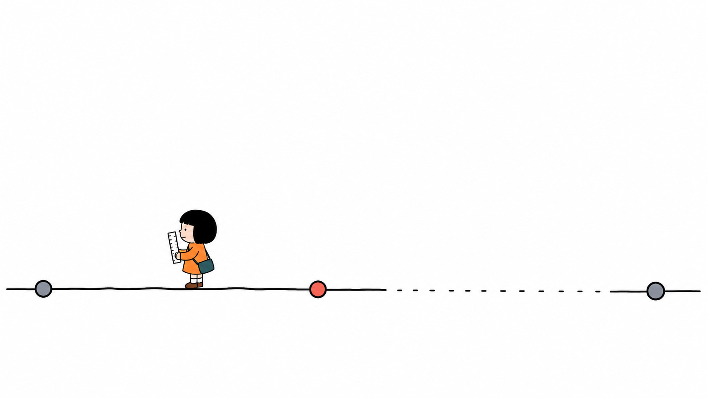
마태복음 2:13 • 원문 추정•검토 필요 • 원문 행 7, 15 • 마태복음 2:13
02
롬 1:1–2 하나님의 복음
03 — 12
CLAIM
박해가 복음의 경로를 바꾸다
예루살렘의 박해와 흩어짐이 유대•사마리아를 넘어선 전파의 길을 연다.
예루살렘→유대→사마리아→다음 도시
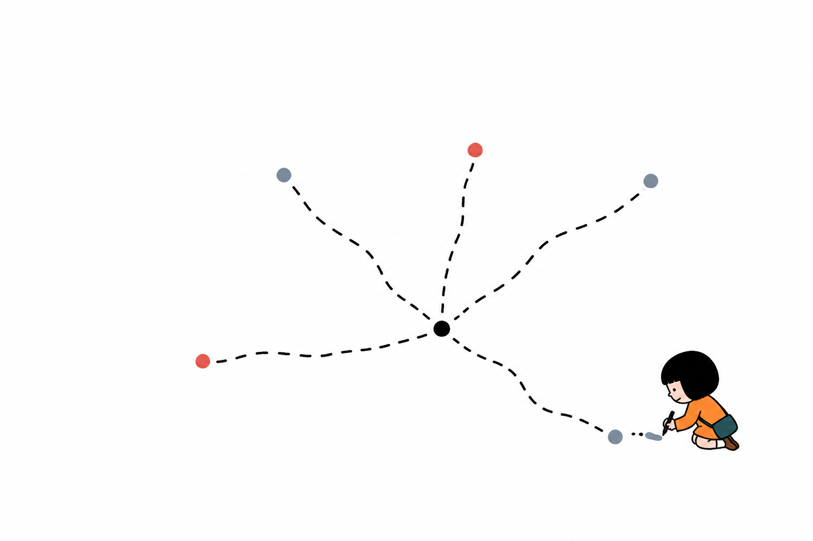
사도행전 8:1 • 원문 행 19, 25 • 사도행전 8:1
03
롬 1:1–2 하나님의 복음
04 — 12
CONTEXT
안디옥에서 경계가 섞이다
안디옥 공동체는 유대인과 이방인이 함께 복음을 듣는 장으로 제시된다.
안디옥에서 함께 배우는 공동체
유대인→이방인
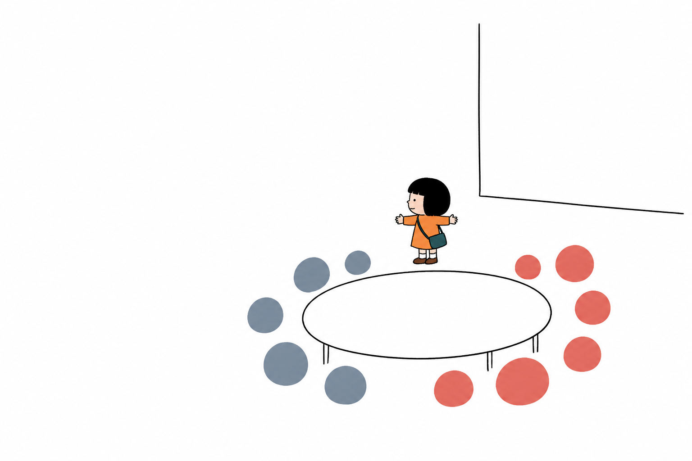
사도행전 11:19–26 • 원문 행 35, 41 • 사도행전 11:19–26
04
롬 1:1–2 하나님의 복음
05 — 12
CLAIM
‘그리스도인’은 누가 붙인 이름인가
원문은 안디옥 주민들이 제자들을 ‘그리스도인’이라 부른 것으로 설명한다.
처음 불린 곳: 안디옥
크리스티아누스
크리스티아누스
처음 불린 곳: 안디옥
크리스티아누스
크리스티아누스
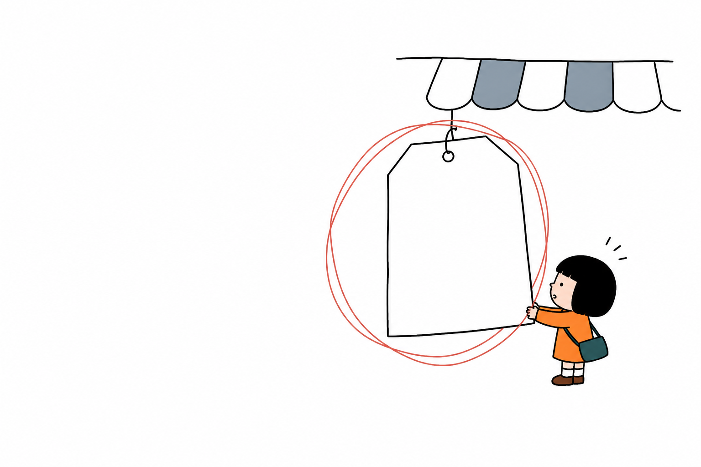
사도행전 11:26 • 명명 주체•어원 검토 필요 • 원문 행 43, 49 • 사도행전 11:26
05
롬 1:1–2 하나님의 복음
06 — 12
LIFE
제자는 훈련 수료자가 아니다
원문에서 제자는 예수를 믿고 그에게 속해 따르는 모든 사람이다.
그리스도에게 속하고 따르는 사람
그리스도에게 속한 사람→제자
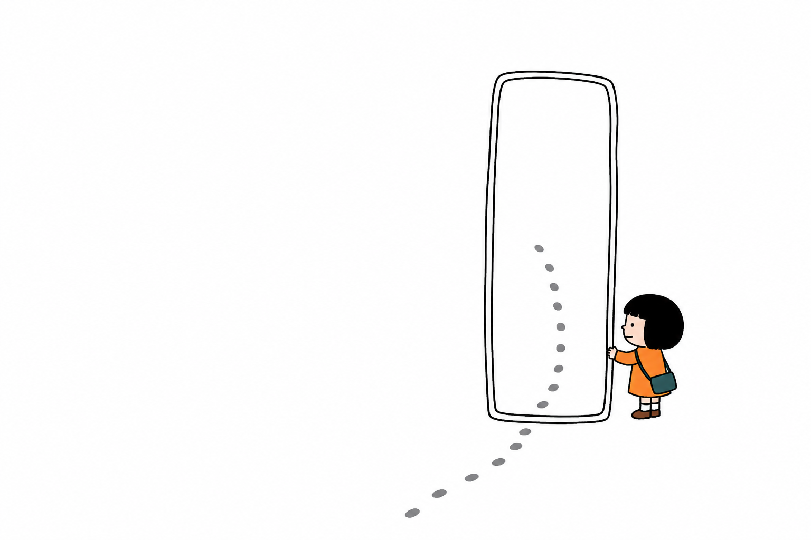
사도행전 11:26 • 원문 행 51, 63 • 사도행전 11:26
06
롬 1:1–2 하나님의 복음
07 — 12
COMPARISON
예수와 바울은 어떻게 복음을 전했나
예수는 하나님 나라를, 바울은 주 예수를 믿는 구원을 앞세워 복음을 전한다.
서로 다른 청중에게 건넨 두 표현
하나님 나라→주 예수를 믿음
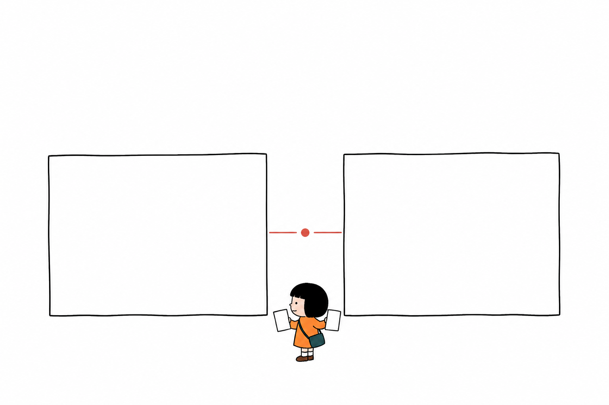
사도행전 16:31 • 마가복음 1:15 • 원문 행 67, 83, 98, 101 • 사도행전 16:31 • 마가복음 1:15
07
롬 1:1–2 하나님의 복음
08 — 12
CLAIM
형식은 달라도 본질은 하나다
두 복음의 공통 핵심은 죄 용서와 하나님의 다스림이다.
죄 용서→하나님의 다스림→하나의 복음
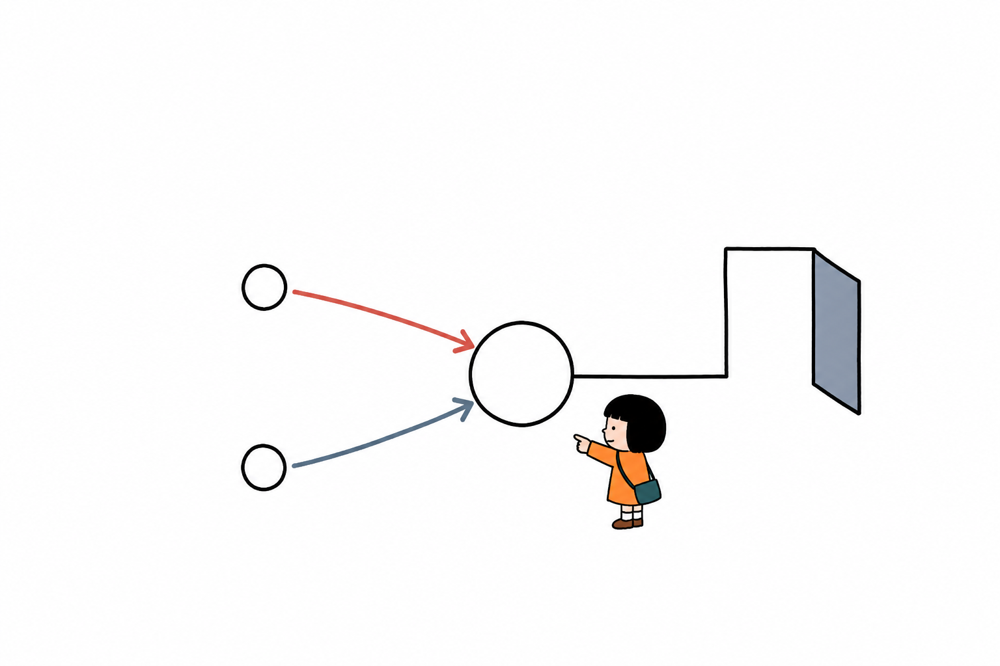
마가복음 1:15 • 사도행전 16:31 • 원문 행 95, 109 • 마가복음 1:15 • 사도행전 16:31
08
롬 1:1–2 하나님의 복음
09 — 12
CLAIM
십자가와 부활이 하나님 나라를 완성하다
원문에서 십자가는 죄 용서, 부활은 죽음의 패배와 하나님 나라의 완성을 가리킨다.
죄→죽음→부활→나라의 완성
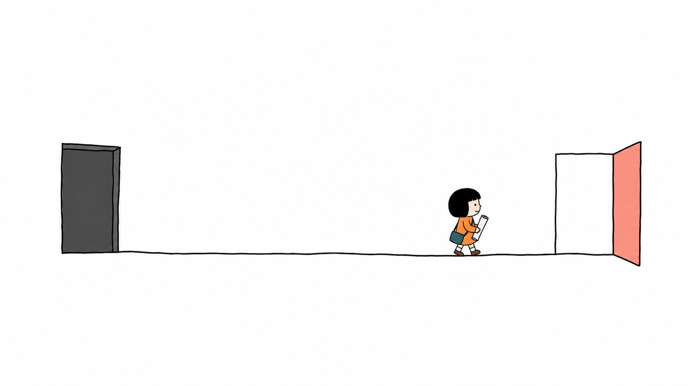
설교자의 신학적 해석 • 원문 행 103, 117 • 십자가와 부활
09
롬 1:1–2 하나님의 복음
10 — 12
EVIDENCE
왜 인간이 아니라 예수인가
원문은 죄 있는 인간이 죄인을 대신할 수 없기에 흠 없는 대속이 필요하다고 설명한다.
흠 없는 대속이 필요하다는 구조
반복되는 제사→단번의 속죄
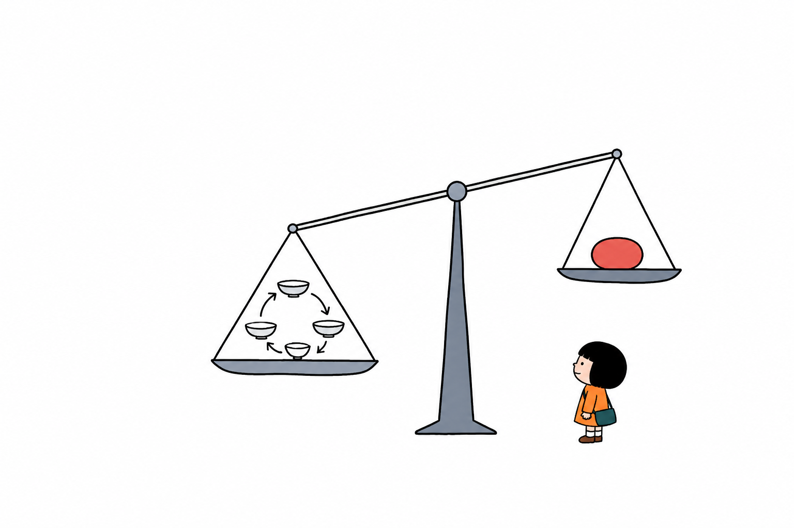
히브리서 9:12–14, 9:22 • 원문 행 121, 129, 147 • 히브리서 9:12–14 • 히브리서 9:22
10
롬 1:1–2 하나님의 복음
11 — 12
LIFE
구원은 삶 전체의 예배로 이어진다
깨끗해진 양심은 예배당 안의 형식뿐 아니라 하나님과 함께하는 일상으로 드러난다.
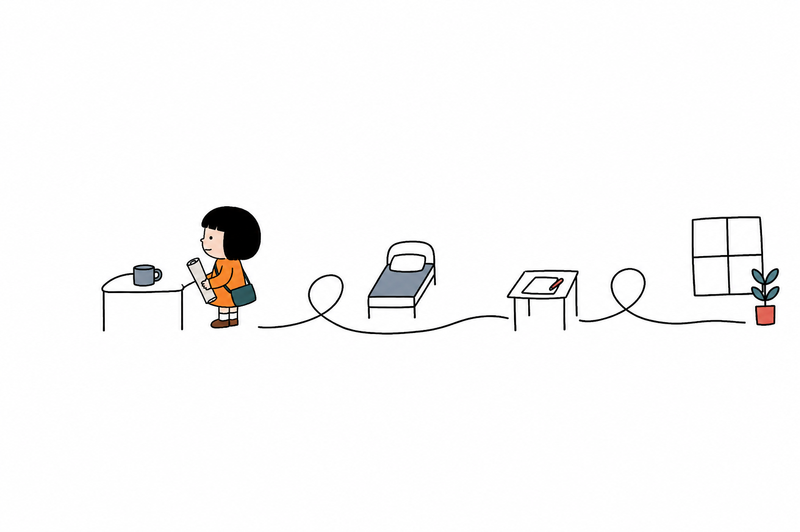
예배 = 하나님 나라에서의 삶
히브리서 9:14 • 원문 행 151, 163 • 히브리서 9:14
11
롬 1:1–2 하나님의 복음
12 — 12
CONCLUSION
“
예수님의 복음과 바울의 복음은 하나다
하나님 나라의 도래와 주 예수를 믿는 구원은 하나님의 복음을 서로 다른 청중에게 전한 두 표현이다.
로마서 3:25–26 • 다음 로마서 강해로
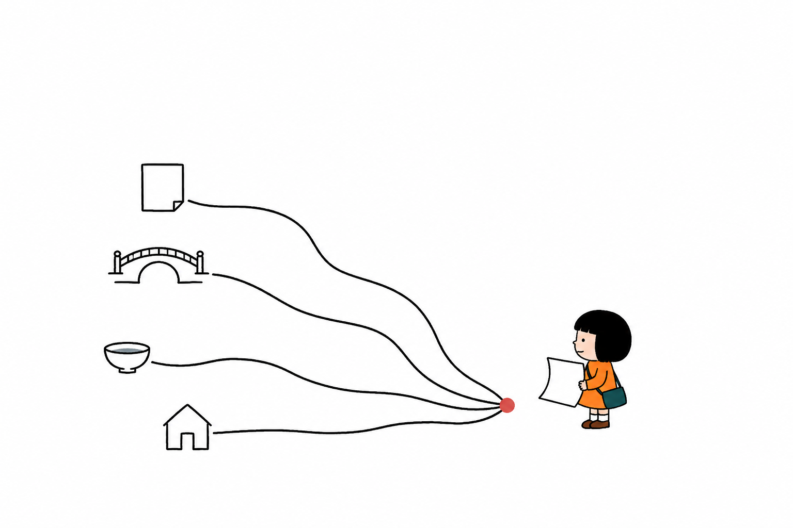
로마서 3:25–26 • 원문 주장•검토 필요 • 원문 행 167, 189, 193, 195 • 로마서 3:25–26 • 마가복음 1:15 • 사도행전 16:31
12
← → 페이지 이동 · N 스피커 노트 · P 인쇄 대화상자